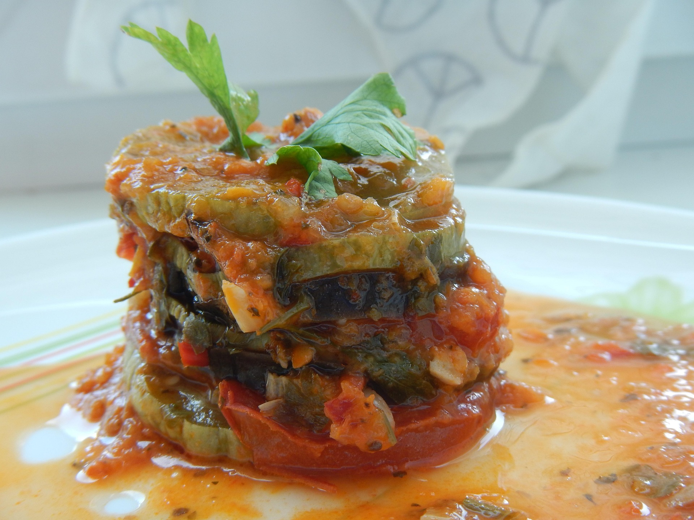

Homepage
Ratatouille

Description
Ratatouille is a vibrant and healthy vegetarian French dish. It is the namesake of the famous 2007 Pixar movie.
Ingredients
- Garlic (3 cloves, minced)
- Olive oil (2 tablespoons)
- Eggplant (x1, cut into 1/2-inch cubes)
- Zucchini (x2, sliced)
- Tomatoes (x2, chopped)
- Mushrooms (2 cups, sliced)
- Onion (x1, sliced into rings)
- Bell pepper (1x, sliced, preferably red or green)
- Dried parsley (2 teaspoons)
- Salt (to taste)
- Grated parmesan (1 cup)
Steps
- Preheat oven to 350ºF (175ºC).
- In a skillet, coat the skillet with olive oil and cook the garlic. Add the eggplant, parsley and salt.
- Cook until the eggplant is tender (~10 minutes), then spread the mixture in a preparred casserole dish.
- Sprinkle with parmesan, spread the zucchini on top and sprinkle with more parmesan and salt.
- Continue to layer with the other ingredients (tomatoes, mushrooms, onion, bell pepper) according to the instructions in Step 4.
- Bake the ratatouille in the preheated oven until the vegetables are tender (~45 minutes)
- Serve hot!